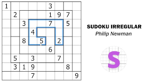
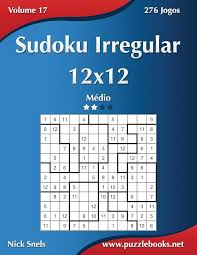

Irregular:
Criar pontos referência, ou seja, menos campos preenchidos, porém é importante criar mesmo que já tenha.
Jogada copiada, exemplo:
Candidato Único (Single)
Um número só pode entrar em uma célula daquela região irregular.
Muito comum porque as regiões têm formatos estranhos.
Único na Região (Hidden Single)
Um número aparece apenas uma vez possível dentro da região irregular.
Interseção Linha / Região
Se um número só pode ficar em determinadas células de uma região que estejam na mesma linha ou coluna, ele pode ser eliminado do resto dessa linha/coluna fora da região.
Pares / Trincas Nus (Naked Pairs / Triples)
Duas (ou três) células de uma região irregular contêm os mesmos candidatos.
Esses números são eliminados das outras células da região.
Pares / Trincas Ocultos (Hidden Sets)
Um conjunto de números só aparece em um conjunto específico de células da região irregular.
Bloqueio de Região Irregular
Uma região pode bloquear um número em várias linhas e colunas ao mesmo tempo.
Eliminações “em cascata” são comuns.
X-Wing / Swordfish / Jellyfish
Funciona normalmente, independente do formato das regiões.
Baseado apenas em linhas e colunas.
Coloração Simples (Simple Coloring)
Conecte pares fortes dentro de regiões irregulares.
Contradições surgem mais rápido que no Sudoku clássico.
Cadeias (XY-Chain, AIC)
Muito poderosas em regiões não padronizadas.
Exploram dependências lógicas entre regiões estranhas.
Unique Rectangles (com cuidado)
⚠️ Nem todo Sudoku irregular é garantidamente único.
Análise de Forma da Região
Observe regiões longas, finas ou com “pontas”.
Elas criam restrições naturais.
Força de Candidatos
Algumas células pertencem a regiões que cruzam várias linhas e colunas → candidatos ficam muito limitados.
Pense sempre em linha + coluna + região
Regiões irregulares quebram simetrias → aproveite isso
Técnicas simples resolvem muitos puzzles
Use lápis (candidatos) desde cedo
Avançadas aparecem mais cedo que no clássico
Técnicas Específicas para Irregulares (Jigsaw/Nonomino Sudoku)
Foco nas Regiões Irregulares: As regiões (blocos) não são 3x3, mas têm formatos livres. Analise cada região irregular como uma unidade.
"Último Recurso" na Região: Se uma região irregular tem muitas células, mas uma célula específica é a única daquela linha/coluna que pode receber um certo número dentro daquela região, ela deve ser esse número (princípio da impossibilidade).
VÍDEOS:

